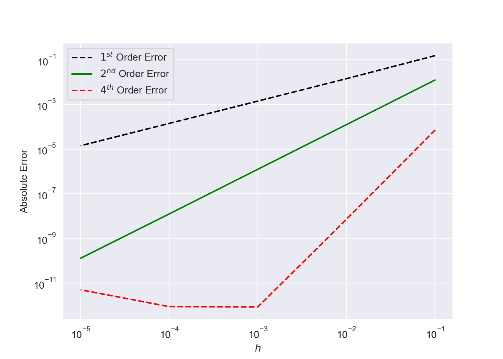

Chapter 1 Numerical Differentiation
In certain situations it is difficult to work with the actual derivative of a function. In some cases a derivative may fail to exist at a point. Another situation is when dealing with a function represented only by data and no analytic expression. In such situations it is desirable to be able to approximate the derivative from the available information. Presented below are methods used approximate \(f'(x).\)
Numerical differentiation is not a particularly accurate process. It suffers from round-off errors (due to machine precision) and errors through interpolation. Therefore, a derivative of a function can never be computed with the same precision as the function itself.
1.1 Finite Difference Methods
The above definition uses values of \(f\) near the point of differentiation, \(x\). To obtain a formula approximating the first derivative, we typically use equally spaced points in the neighbourhood (e.g. \(x - h, x, x + h\), where \(h\) is some small positive value) and construct an approximation from these values for the function \(f(x)\) at these points.
This obviously leads to an error caused by the discretisation (truncation error). This error will decrease as \(h\) decrease, provided that the function \(f(x)\) is sufficiently smooth.
1.1.1 Approximations to \(f^\prime(x)\)
Given a smooth function \(f: \mathbb{R} \rightarrow \mathbb{R}\), we wish to approximate its first and second derivatives at a point \(x\). Consider the Taylor series expansions:
\[\begin{equation} f(x + h) = f(x) + f^\prime(x)h + \dfrac{f^{\prime\prime}(x)}{2}h^2 + \dfrac{f^{\prime\prime\prime}(x)}{6}h^3 + \ldots, \tag{1.2} \end{equation}\] and \[\begin{equation} f(x - h) = f(x) - f^\prime(x)h + \dfrac{f^{\prime\prime}(x)}{2}h^2 - \dfrac{f^{\prime\prime\prime}(x)}{6}h^3 + \ldots.\tag{1.3} \end{equation}\] Solving for \(f^\prime (x)\) in Equation (1.2), we obtain the Forward Difference Formula: \[\begin{equation} f^\prime(x) = \dfrac{f(x + h)- f(x)}{h} - \dfrac{f^{\prime\prime}(x)}{2}h + \ldots\ \approx\ \dfrac{f(x + h) - f(x)}{h},\tag{1.4} \end{equation}\] which gives an approximation that is first-order accurate since the dominant term in the remainder of the series is \(\mathcal{O}(h)\). Here the associated error is \(-\frac{h}{2}f^{\prime\prime}(\epsilon)\).
Similarly, from Equation (1.3) we derive the Backward Difference Formula: \[\begin{equation} f^\prime(x) = \dfrac{f(x) - f(x - h)}{h} + \dfrac{f^{\prime\prime}(x)}{2}h + \ldots\ \approx\ \dfrac{f(x) - f(x - h)}{h},\tag{1.5} \end{equation}\] which is also \(\mathcal{O}(h)\). Here the associated error is \(\frac{h}{2}f^{\prime\prime}(\epsilon)\).
Now, subtracting Equation (1.3) from Equation (1.2) gives the Central Difference Formula: \[\begin{equation} f^\prime(x) = \dfrac{f(x + h) - f(x - h)}{2h} - \dfrac{f^{\prime\prime\prime}(x)}{6}h^2 + \ldots \ \approx \ \dfrac{f(x + h) - f(x - h)}{2h},\tag{1.6} \end{equation}\] which is second order accurate, i.e. \(\mathcal{O}(h^2)\). This approximation is a three-point formula (implying that three points are required to make an approximation). Here the truncation error is \(-\frac{h^2}{6}f^{\prime\prime\prime}(\epsilon)\), where \(x - h \leq \epsilon \leq x + h\).
1.1.2 Approximations to \(f^{\prime\prime}(x)\)
Adding Equation (1.3) to Equation (1.2) gives the Central Difference Formula for the second derivative: \[\begin{equation} f^{\prime\prime}(x) = \dfrac{f(x + h) - 2f(x) + f(x - h)}{h^2} - \dfrac{f^{4}(x)}{12}h^2 + \ldots \ \approx \ \dfrac{f(x + h) -2f(x) + f(x - h)}{h^2}, \end{equation}\] which is second order accurate \(\mathcal{O}(h^2)\). The associated truncation error here is \(-\frac{h^2}{12}f^{iv}(\epsilon)\).
Of course we can keep using function values at further addition points, \(x \pm 2h, x \pm 3h, \ldots\) etc. This gives us similar difference formulas but at much higher accuracy, or for high-order derivatives. The downside to these however, is that we require more function values. This may add much higher computational cost depending on the situation.
1.1.2.1 Mathematica Demonstration
Show Mathematica Demonstration
1.1.2.2 Example
Compute an approximation to \(f^\prime(1)\) for \(f(x) = x^2\cos(x)\) using the central difference formula and \(h = 0.1, 0.05, 0.025, 0.0125\).
from math import *
cfd = lambda f, x, h: (f(x + h) - f(x - h))/(2*h)
x = 1
h = [0.1, 0.05, 0.025, 0.0125, 0.00625]
f = lambda x: (x**2)*cos(x)
for i in h:
y = cfd(f, x, i)
print('The derivative at x = 1 with h = {:.4f} is f^1(x) = {:.10f}'.format(i, y))
## The derivative at x = 1 with h = 0.1000 is f^1(x) = 0.2267361631
## The derivative at x = 1 with h = 0.0500 is f^1(x) = 0.2360309206
## The derivative at x = 1 with h = 0.0250 is f^1(x) = 0.2383577415
## The derivative at x = 1 with h = 0.0125 is f^1(x) = 0.2389396425
## The derivative at x = 1 with h = 0.0063 is f^1(x) = 0.2390851300## The true solution at x = 1 is: 0.23913362691.1.3 Errors in First and Second Order
How do the relevant errors look with regard to the example above? We can plot the absolute error of the approximations using both approaches compared to the true value. This is illustrated below:

## Error Values - Tabulated## First Order Second Order Fourth Order
## 0.10000 0.153644 1.239746e-02 7.113648e-05
## 0.01000 0.014252 1.241510e-04 7.130152e-09
## 0.00100 0.001414 1.241528e-06 8.428813e-13
## 0.00010 0.000141 1.241594e-08 8.706647e-13
## 0.00001 0.000014 1.279912e-10 4.941492e-12Notice the observed behaviour of the fourth order errors in the plot above. Does this seem expected? While intuitively we expect only the behaviour seem in the first and second orders errors something is causing a loss of accuracy as \(h\) decreases with our fourth order approximation. The reason for this is inherent in the approximation formula. At small \(h\) the formula has instances of subtracting nearly equal numbers, and along with the loss of significant digits, this is exacerbated by the division of small numbers. This illustrates the effect that machine precision can have on our computations!
Optimal Stepsize:
If \(f\) is a function with continuous derivatives up to order 2, then the approximate stepsize \(h\) which minimises the total error(truncation + round-off error) of the derivative of \(f\) at \(x\) is: \[\begin{equation} h^* = 2\dfrac{\sqrt{\epsilon^* |f(x)|}}{\sqrt{|f^{\prime\prime}(x)|}}. \end{equation}\] Here \(\epsilon^*\) is the maximum relative error that occurs when real numbers are represented by floating-point numbers and there is no underflow or overflow. I useful rule-of-thumb estimate for \(\epsilon^*\) is \(7 \times 10^{-17}\).
1.2 Exercises
- Consider the function \(f(x) = \sin(x)\). Using the forward derivative approximation, compute an approximation for \(f^\prime(x)\) at \(x = 0.5\). Investigate a gradual decrease in stepsize and determine a rough estimate for an optimal stepsize \(h\), i.e. one which avoids round-off error. Plot the behaviour of these errors at the varying stepsizes. Does your estimation seem reasonable?
- If we increased the number of bits for storing floating-point numbers, i.e. 128-bit precision, can we obtain better numerical approximations to derivatives?
- The approximation \(f^\prime(x) \approx \dfrac{f(x + h) - f(x)}{h}\) will give the exact answer (assuming no round-off error) if the function \(f\) is linear?
- Use the forward difference formula for \(f^\prime(x)\) to find an approximation for \(f^\prime(1)\) where \(f(x) = \ln(x)\) and \(h = 0.1, 0.01, 0.001\).
- Use the central difference formula for \(f^\prime(x)\) to find an approximation for \(f^\prime(0)\) where \(f(x) = \exp(x)\) and \(h = 0.1, 0.01, 0.001\).
1.3 Richardson’s Extrapolation
In numerical differentiation and soon to be seen integration, we are computing approximate values according to some stepsize. Clearly we would have an ideal case where the stepsize approaches zero as seen in our demo. However, due to rounding error this is simply not possible. Using nonzero stepsizes however, we may be able to estimate the what the value would be for a stepsize approaching zero. If we compute some value \(F\) from some stepsizes \(h_i\) and know something of its behaviour of \(F\) as \(h \rightarrow 0\), then it may be possible to extrapolate from the known values an approximation of \(F\) at \(h = 0\). This extrapolation will be of higher order accuracy than any of the originally used values.
In summary:
Richardson extrapolation method is a procedure which combines several approximations of a certain quantity to yield a more accurate approximation of that quantity.
Suppose we are computing some quantity \(F\) and assume that the result depends on some stepsize \(h\). Denoting the approximation by \(f(h)\), we have \(F = f(h) + E(h)\), where \(E(h)\) represents an error. Richardson’s extrapolation can remove the error provided \(E(h) = ch^p\), where \(c\) and \(p\) are constants. We start by computing \(f(h)\) at some value of \(h\), say \(h_1\) giving: \[\begin{equation*} F = f(h_1) + ch_1^p, \end{equation*}\] and another value \(h = h_2\): \[\begin{equation*} F = f(h_2) + ch_2^p. \end{equation*}\] Then solving the above equations for \(F\) we get: \[ F = \dfrac{(h_1/h_2)^pf(h_2) - f(h_1)}{(h_1/h_2)^p - 1}, \] which is the Richardson’s Extrapolation Formula. In this course we will only consider half-steps, thus \(h_2 = h_1/2\). This allows us to rewrite our formula as: \[ F = \dfrac{2^p f(h_1/2) - f(h_1)}{2^p - 1}. \] Or more specifically, assuming we have some initial approximation \(F_n(h)\), then we can obtain a general \(n+1\)th order formula \(F_{n+1}(h)\): \[ F_{n+1}(h) = \dfrac{2^n F_{n}(h/2) - F_n(h)}{2^n - 1}. \] To illustrate why this yields a higher order approximation, consider the the second order central difference formula: \[\begin{equation*} F_2(h) = f^\prime(x) = \dfrac{f(x + h) - f(x - h)}{2h}, \end{equation*}\] using this extrapolation formula we can get a new formula for \(f^\prime(x)\) as: \[\begin{eqnarray*} F_4(h) &=& \dfrac{2^2F_2(h/2) - F_2(h)}{2^2 - 1}, \\ &=& \left[ 4\dfrac{f(x+ h/2) - f(x - h/2)}{h} - \dfrac{f(x+h) - f(x-h)}{2h}\right]/3, \\ &=& \dfrac{f(x - h) - 8f(x - h/2) + 8f(x+ h/2) - f(x + h)}{6h}, \end{eqnarray*}\] which is the five-point central difference formula which is of order four \(\mathcal{O}(h^4)\).
In order to apply this strategy, we need only apply a cheap but high order approximation for an array for halving stepsizes in order to extrapolate a much high order accurate approximation. We can do this by building the Richardson’s Extrapolation Table. To do this, let us rewrite our formula one last time: \[\begin{equation} F_j^i = \dfrac{1}{4^j - 1}\left( 4^jF_{j-1}^{i} - F_{j-1}^{i-1}\right), \ \ \ \ j = 1, 2, \ldots m,\ i = 1, 2, \ldots, n.\tag{1.7} \end{equation}\] Here \(j\) denotes iteration of the extrapolation and \(i\) the particular stepsize.
So if we use our difference formulae to compute our initial approximations \(F_1^1, F_1^2, \ldots, T_1^n\) (which we should try to use as higher an order as possible), then we use the above formula to build up the table.
1.3.1 Example
Build a Richardson’s extrapolation table for \(f(x) = x^2\cos(x)\) to evaluate \(f^\prime (1)\) for \(h = 0.1, 0.05, 0.025, 0.0125\).
Solution:
We have:
\[\begin{eqnarray*} F_1^1 &=& F_0^2+\dfrac{1}{3}(F_0^2-F_0^1)= \dfrac{1}{3}(4 F_0^2-F_0^1)\\ F_1^2 &=& F_0^3+\dfrac{1}{3}(F_0^3-F_0^2)= \dfrac{1}{3}(4 F_0^3-F_0^2)\\ F_1^3 &=& F_0^4+\dfrac{1}{3}(F_0^4-F_0^3)= \dfrac{1}{3}(4 F_0^4-F_0^3)\\ F_2^1 &=& F_1^2+\dfrac{1}{15}(F_1^2-F_1^1)= \dfrac{1}{15}(16 F_1^2-F_1^1)\\ F_2^2 &=& F_1^3+\dfrac{1}{15}(F_1^3-F_1^2)= \dfrac{1}{15}(16 F_1^3-F_1^2)\\ F_3^1 &=& F_2^2+\dfrac{1}{63}(F_2^2-F_2^1)= \dfrac{1}{63}(64 F_2^2-F_2^1) \end{eqnarray*}\]
In Tabular form:
| \(i\) | \(h_i\) | \(F_0^i\) | \(F_1^i\) | \(F_2^i\) | \(F_3^i\) |
|---|---|---|---|---|---|
| 1 | 0.1 | 0.226736 | |||
| 2 | 0.05 | 0.236031 | 0.239129 | ||
| 3 | 0.025 | 0.238358 | 0.239133 | 0.239134 | |
| 4 | 0.0125 | 0.238938 | 0.239132 | 0.239132 | 0.239132 |
Note: The \(F_1^i\) values are computed from whatever was used for the initial approximation. In this case, it was the central difference approximation.
1.3.2 Exercises
- Develop a two point backward difference formula for approximating \(f^\prime(x)\) including the error term.
- Develop a second order method for approximating \(f^\prime(x)\) that only uses the data \(f(x - h), f(x)\) and \(f(x+ 3h)\).
- Extrapolate the formula obtained in exercise (2). Then demonstrate the order of this new formula by approximating \(f^\prime(\pi/3)\) where \(f(x) = \sin(x)\) and \(h = 0.1, 0.01\).
- Use the forward difference formulas and backward difference formulas to determine the missing entries in the following table:
| \(x\) | \(f(x)\) | \(f^\prime(x)\) |
|---|---|---|
| 0.5 | 0.4794 | Compute |
| 0.6 | 0.5646 | Compute |
| 0.7 | 0.6442 | Compute |
- Using the times and positions recorded for a moving car below, compute the velocity of the car at all times listed:
| Time (\(s\)) | 0 | 3 | 5 | 8 | 10 | 13 |
|---|---|---|---|---|---|---|
| Distance (\(m\)) | 0 | 225 | 383 | 623 | 742 | 993 |
- Apply Richard’s extrapolation to determine \(F_3(h)\), an approximation to \(f^\prime(x)\) for the the following function: \[\begin{equation*} f(x) = 2^x\sin(x),\ x_0 = 1.05,\ h = 0.4 \end{equation*}\]
- Use the centred difference formula to approximate the derivative of each of the following functions at the specified location and for the specified size:
- \(y = \tan x\) at \(x = 4, h = 0.1\)
- \(y = \sin(0.5\sqrt{x})\) at \(x = 1, h = 0.125\)
- A jet fighter’s position on an aircraft carrier’s runway was timed during landing: where \(x\) is the distance from the end of the carrier, measured in metres and \(t\) is the time in seconds. Estimate the velocity and acceleration for each time point and plot these values accordingly.
| \(t\) | 0 | 0.51 | 1.03 | 1.74 | 2.36 | 3.24 | 3.82 |
|---|---|---|---|---|---|---|---|
| \(x\) | 154 | 186 | 209 | 250 | 262 | 272 | 274 |
- The following data was collected when a large oil tanker was loading. Calculate the flow rate \(Q = \dfrac{dV}{dt}\) for each time point.
| \(t\), min | 0 | 15 | 30 | 45 | 60 | 90 | 120 |
|---|---|---|---|---|---|---|---|
| \(V\), \(10^6\) barrels | 0.5 | 0.65 | 0.73 | 0.88 | 1.03 | 1.14 | 1.30 |